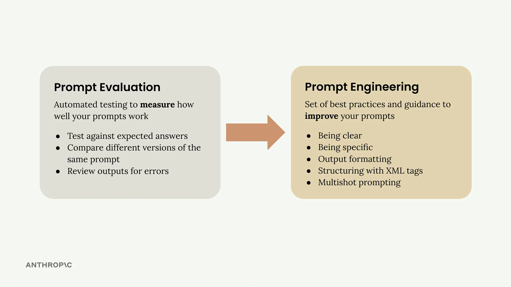
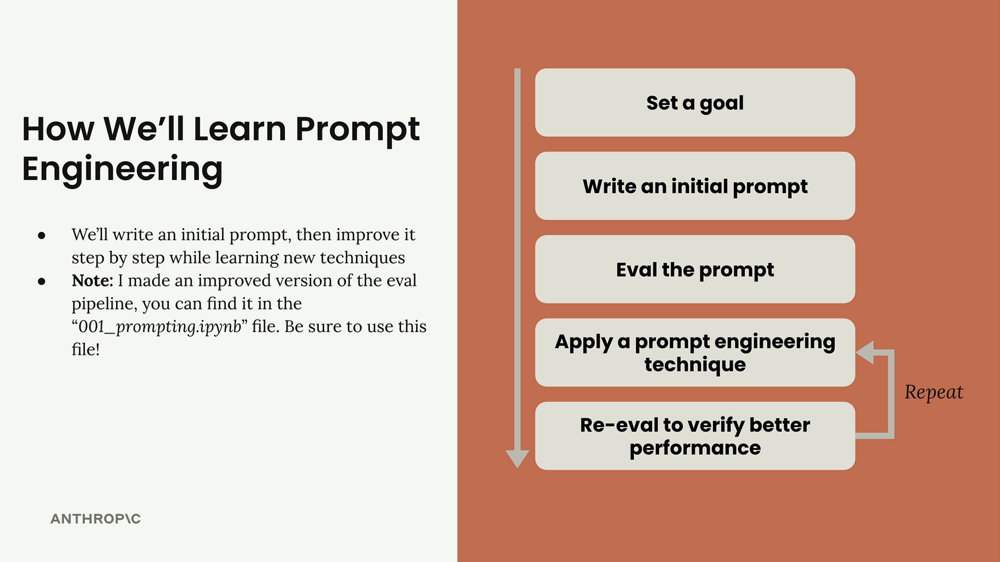
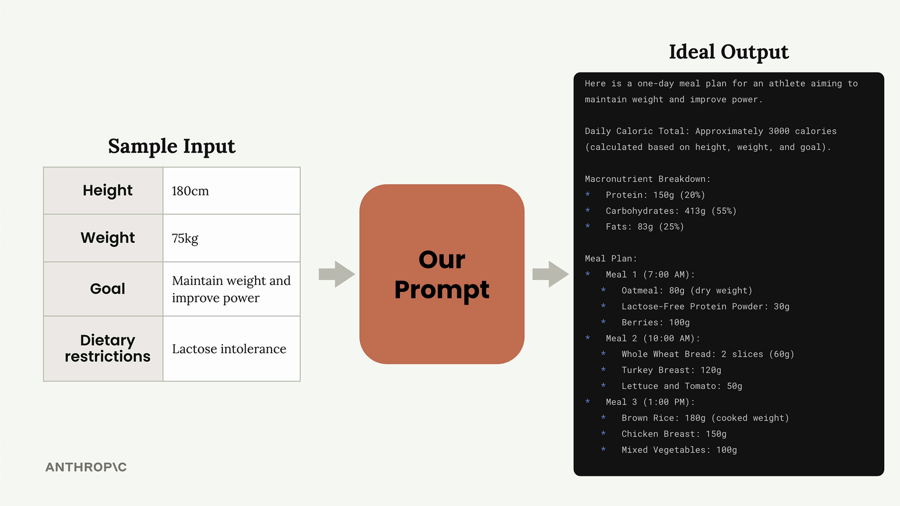
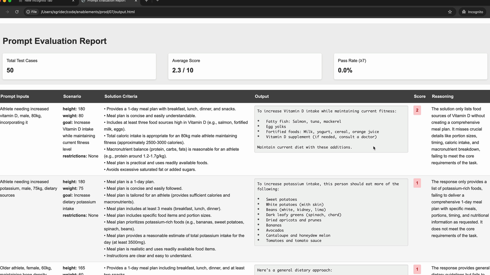

Prompt engineering
Чему научитесь
Видео 10:50 и текст урока
К концу урока вы сможете:
- описать цикл итеративного улучшения промпта;
- настроить оценку с помощью класса
PromptEvaluatorиз ноутбука курса; - получить исходный балл и читать отчёт об оценке.
Видео и текст урока.
Смотреть урок на Skilljar Prompt engineering · 10:50Prompt engineering — это работа над уже написанным промптом, чтобы получать более надёжные и качественные ответы. Процесс итеративный: начинаете с простого промпта, оцениваете его, а затем системно применяете приёмы prompt engineering, чтобы его улучшить.

Цикл итеративного улучшения
Подход строится вокруг понятного цикла, который можно повторять, пока не получите нужный результат:

001_prompting.ipynb.- Поставить цель — определить, что должен делать промпт;
- Написать первый промпт — простая первая попытка;
- Оценить промпт — проверить его по вашим критериям;
- Применить приёмы prompt engineering — улучшить результат конкретными методами;
- Оценить заново — убедиться, что изменения действительно улучшили результат.
Последние два шага повторяются, пока качество вас не устроит. Каждая итерация должна давать измеримый рост балла оценки.
Настраиваем конвейер оценки
Чтобы показать процесс, возьмём практический пример: промпт, который составляет план питания на один день для спортсменов. Промпт должен учитывать рост, вес, цели и ограничения в питании спортсмена и выдавать подробный план питания.

Для оценки используется класс PromptEvaluator, который берёт на себя генерацию датасета и оценку моделью. При создании экземпляра можно управлять параллельностью через параметр max_concurrent_tasks:
evaluator = PromptEvaluator(max_concurrent_tasks=5)
Начните с небольшого значения (например, 3), чтобы не упереться в ограничения по частоте запросов (rate limits). Если ваша квота API позволяет, значение можно увеличить для более быстрой обработки.
Генерируем тестовые данные
Система оценки умеет автоматически генерировать тестовые случаи по требованиям к промпту. Вы описываете, какие входные данные нужны промпту:
dataset = evaluator.generate_dataset(
task_description="Write a compact, concise 1 day meal plan for a single athlete",
prompt_inputs_spec={
"height": "Athlete's height in cm",
"weight": "Athlete's weight in kg",
"goal": "Goal of the athlete",
"restrictions": "Dietary restrictions of the athlete"
},
output_file="dataset.json",
num_cases=3
)
Во время разработки держите число тестовых случаев небольшим (2–3), чтобы итерации шли быстрее. Для финальной проверки его можно увеличить.
Пишем первый промпт
Начните с простого, наивного промпта, чтобы получить точку отсчёта. Вот пример нарочно простой первой попытки:
def run_prompt(prompt_inputs):
prompt = f"""
What should this person eat?
- Height: {prompt_inputs["height"]}
- Weight: {prompt_inputs["weight"]}
- Goal: {prompt_inputs["goal"]}
- Dietary restrictions: {prompt_inputs["restrictions"]}
"""
messages = []
add_user_message(messages, prompt)
return chat(messages)
Скорее всего, этот простой промпт даст плохие результаты, но от него можно отсчитывать улучшения.
Добавляем критерии оценки
При запуске оценки можно указать дополнительные критерии, которые должна учитывать модель-оценщик:
results = evaluator.run_evaluation(
run_prompt_function=run_prompt,
dataset_file="dataset.json",
extra_criteria="""
The output should include:
- Daily caloric total
- Macronutrient breakdown
- Meals with exact foods, portions, and timing
"""
)
Так промпт оценивается именно по тем требованиям, которые важны в вашей задаче.
Разбираем результаты
После оценки вы получаете и числовой балл, и подробный HTML-отчёт. Отчёт показывает, как прошёл каждый тестовый случай, включая обоснование оценки от модели.
Не расстраивайтесь из-за низких первых баллов: 2.3 из 10 — обычное дело для первой попытки. Цель — видеть стабильный рост по мере применения приёмов.

Подробный отчёт помогает понять, где именно промпт не справляется и что нужно улучшить. Используйте эту обратную связь для следующей итерации.
Что дальше
Когда исходный балл получен, можно применять конкретные приёмы prompt engineering. Каждый новый приём должен давать измеримый рост баллов, постепенно превращая простой промпт в надёжный и качественный инструмент.
Помните, что prompt engineering — итеративный процесс. Главное — менять что-то одно за раз, оценивать эффект и развивать то, что работает. Такой системный подход показывает, какие приёмы дают больше всего пользы именно в вашей задаче.
Дальше
Первый приём — писать ясно и прямо, начиная с самой важной первой строки промпта.
Оригинал урока: Prompt engineering.